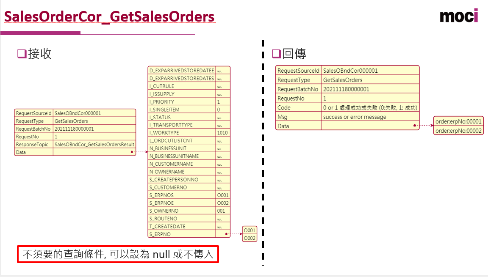

Topics命名规范
- 限制
由大小寫字母、數字、.、_ 組成
不能為空、不能為 .、不能為 ..
長度不能超過249
雙底線 (__) 一般為 kafka 內部的 topic，不建議使用
- Topic 命名規則
大小寫 字母組成 (單字第一個字母為大小, 其餘為小寫)
接收(最後處理)服務名稱 + _ + 作業名稱 Ex. CorManager_CorHeartbeat
有階層使用 .
- 訊息內容
使用 JSON 格式
- Topic 基本屬性說明
RequestSourceId：傳送的來源者, 例如: SalesOBndCor, SupplementShiftCor
RequestType: 此需求的功能種類
RequestProcessNo:此次處理的批次編號(唯一), 例如: 第一次GetSalesOrders, 第二次 GetSalesOrders
RequestProcessDataNo: 每一次批次處理的第幾筆資料
ResponseTopic: 回傳的 topic
Data:資料的內容
- 示例:
Topic:SalesOrderCor_GetSalesOrders[依條件取得 Order 清單]
